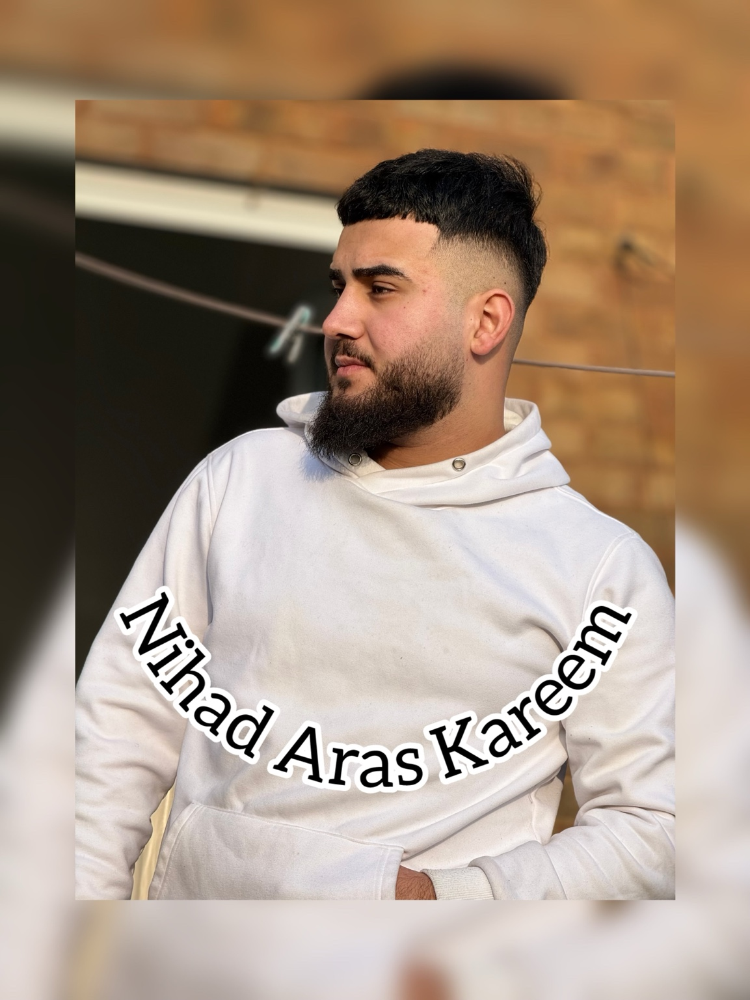
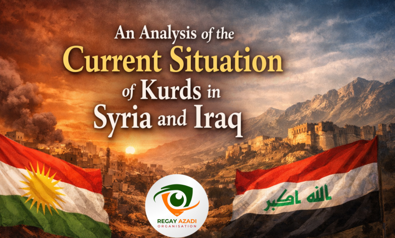

ماڵپەڕی فەرمی
نیهاد ئاراس کەریم
نووسەر و ڕاڤەکاری سیاسی
هەواڵ، ڕاپۆرت و شیکردنەوەی سیاسی لە بەریتانیا و جیهان؛ بە دیدێکی سەربەخۆ و گرنگیدان بە زانیاریی پشتڕاستکراوە.

نوێترین وتارەکان
ARTICLES
ڕاڤەکاری سیاسی
بڕیارە نوێکانی شابانا مەحمود؛ قسە زۆرە، بەڵام جێبەجێکردن کەی؟
ئایا ئەم بڕیارانە بەڕاستی چوونەتە بواری جێبەجێکردن، یان تەنها ڕاگەیاندن و قسەی میدیایی بوون؟
نووسەر: نیهاد ئاراس کەریم خوێندنەوەی وتار
شیکردنەوەی سیاسی
شیکردنەوەی دۆخی ئێستای کورد لە سووریا و عێراق
خوێندنەوەیەک لە ناسنامەی کوردی لە سووریا، پەیوەندیی هەرێم و بەغدا، و کێشە ناوخۆییەکانی کوردستان.
نووسەر: نیهاد ئاراس کەریم · ٢١ی کانوونی دووەمی ٢٠٢٦ خوێندنەوەی وتار ←
شیکردنەوەی سیاسی
ململانێی بەردەوامی ڕۆژهەڵاتی ناوەڕاست و کاریگەرییەکانی لەسەر عێراق و کوردستان
شیکردنەوەی کاریگەریی ملمـلانێی ناوچەیی لەسەر عێراق و هەرێمی کوردستان.
نووسەر: نیهاد ئاراس کەریم خوێندنەوەی وتار ←
ڕاڤەکاری سیاسی
کوردستان لە نێوان هاوپەیمانیی سیاسی و دابەشبوونی دەسەڵاتدا
ڕاڤەکارییەک لەسەر دۆخی سیاسیی هەرێمی کوردستان و هاوپەیمانیی نێوان لایەنەکان.
نووسەر: نیهاد ئاراس کەریم خوێندنەوەی وتار ←بەشەکانی ماڵپەڕ
EDITORIALدەربارەی من
نیهاد ئاراس کەریم
نووسەر و ڕاڤەکاری سیاسی. ئەم ماڵپەڕە شوێنێکە بۆ پێشکەشکردنی هەواڵ، وتار و شیکردنەوە بە زمانی کوردی، ئینگلیزی و عەرەبی.
پەیوەندی
بۆ پەیوەندی و هاوکاریی ڕۆژنامەوانی، زانیاریی پەیوەندی دواتر لێرە زیاد دەکرێت.
لە فەیسبووک فۆڵۆم بکەدۆمەینی پێشنیارکراو: nihadkareem.com — پێویستە تۆمارکردن و بەردەستبوونی بپشکنرێت.